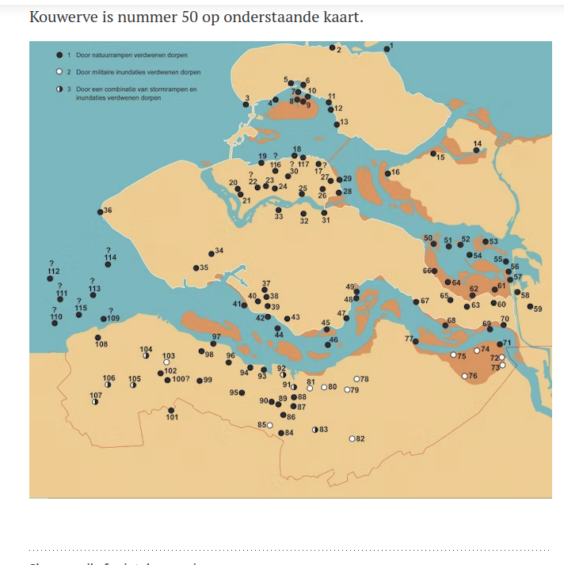

https://www.zeeuwsarchief.nl/bronnen/zeeuwse-woonplaatsen/kouwerve/
1530 en 1532
Couwerve, voormalig ambacht op de oostzijde van Zuid-Beveland. Het was eene heerlijkheid, waarvan het oude geslacht van Couwerve, dat later in Vlaanderen en Braband gebloeid heeft, zijne naam ontleende.
Het dorp Couwerve lag tegen over St Maartensdijk, op het eiland Tholen, en behoorde onder het bisdom van Utrecht. Het wapen van dit ambacht bestond uit een schild van zilver, beladen met hermelijnen, het bovenste gedeelte van keel, beladen met drie St. Jacobsschelpen van goud.
